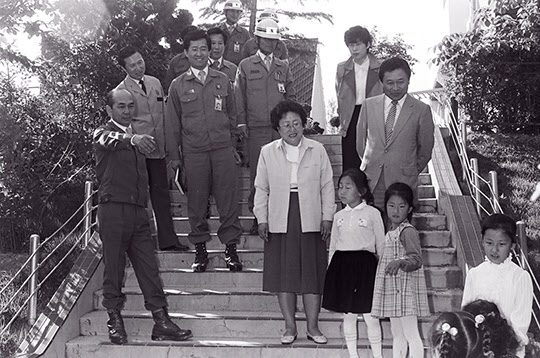
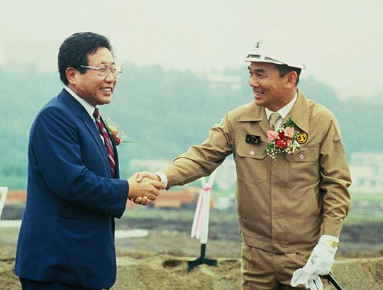
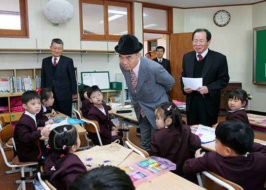

연재일 2015-01-21출처 조선일보 프리미엄조선 연재
1970년의 박정희는 국내의 거센 저항을 받는 가운데 워싱턴과 껄끄러워지고 있었다. 김지하 시인의 ‘5적 필화’ 사건이 일어나고, 닉슨이 주한미군 철수를 발표했다. 베트남전쟁은 종점으로 가고 있었다. 박정희의 시각에는 ‘내우외환’이었다. 그는 닉슨독트린을 역이용할 ‘자주국방·자립경제·자주통일’의 깃발을 준비했다.
박정희가 김종필을 총리로 기용한 때는 1971년 6월이다. 김종필이 빠진 1970년의 공화당에서 주도권을 잡고 있던 신주류를 흔히 ‘4인 체제’라 불렀다. 당의장 백남억, 재정위원장 김성곤, 사무총장 길재호, 원내총무 김진만. 이들 중 김성곤이 제일 셌다. 특히 김성곤은 체제유지와 정권창출이란 명목에 걸맞은 규모의 정치자금을 광범위하게 끌어 모아야 했다.
당 밖에서는 중앙정보부장 이후락이 맵차게 설쳤다. 그는 김성곤을 능가했다. 박정희는 그러한 내막을 잘 알았다. 군대 시절에 부정부패에 맞섰던 박정희에게는 체질적으로 안 맞는 일이었다. 그러나 정권과 체제 유지에는 정적(政敵)들과 지지자들, 군 지휘관들을 관리하는 자금이 필요했다. 이것이 그의 고민이었다. 못마땅한 구조여도 눈을 감는 수밖에 없었다.
1970년 가을 어느 날이었다. 박태준의 인생에 처음으로 굉장한 규모의 ‘뒷돈’이 저절로 굴러왔다. 보험회사 리베이트 6000만 원. 1기 건설이 시작돼 영일만으로 들어오는 고가 설비에는 규정상 거래하는 양측이 다 보험을 들어야 했는데, 그게 뜻밖에도 큼직한 떡고물을 안겨준 것이었다.
박태준은 임원들과 의논하여 대통령의 통치자금으로 드리는 게 좋겠다고 결정했다. 공화당 재정담당 책임자가 정치자금 모으느라 포스코에도 압력을 넣는 상황에서 부담 없는 공돈이 생겼으니 체면치레는 될 것 같았다.
“나라를 위해 쓰시라고 기부금 좀 가져왔습니다.”
박태준이 6000만 원짜리 수표를 박정희 앞에 놓았다.
“포철은 절대 정치자금 안 낸다고 한 사람이 왜 이래?”
의아하게 쳐다보는 박정희에게 그가 돈의 성격을 설명했다.
“임자는 앞으로 할 일이 태산이야. 가져가서 마음대로 써.”
박정희가 봉투를 도로 밀었다.
“제가 쓰기엔 너무 많은 돈입니다.”
“임자 스케일이 그렇게 작아? 떡을 사먹든 술을 사먹든 맘대로 써. 내 선물이라고 생각해.”
봉투를 돌려받는 박태준을 박정희가 날카롭게 쳐다보았다.
“여보게, 그러면 다른 국영기업체 사장들도 이런 리베이트를 받아왔다는 거 아닌가?”
순간적으로 박태준은 눈앞에 불꽃이 튀는 듯했다. 부정할 수도 긍정할 수도 없는 질문이었다. 청와대를 나서는데 곤혹스러웠다. 순수한 마음을 냈다가, 괜히 다른 사람들의 숨겨진 잘못을 고자질이나 한 꼴이 되고 말았다.
포항으로 내려온 박태준은 곧 임원회의를 열었다. 공돈 6000만 원을 어떻게 쓸 것인가. 그가 안을 냈다.
“우리 회사의 주택문제는 어느 정도 해결되고 있으니, 하나 남은 중요한 과제는 우리 사원 자녀들의 교육문제요. 앞으로 사원이 대폭 늘어나고 젊은 사원들이 나이가 들어가면 무엇보다 자녀교육이 회사의 중요한 복지문제로 떠오를 텐데, 그때를 대비해서 이걸로 제철장학재단을 설립하면 어떻겠소?”
모두 흔쾌히 동의했다. 이튿날부터 실무진은 제철장학재단 설립을 위한 법적 절차에 들어갔다.

1970년 11월 5일 ‘재단법인 제철장학회’ 설립이사회가 열렸다. 박태준이 ‘교육보국’이라는 원대한 포부의 한 자락을 내비쳤다.
“오늘 조촐하게 출발의 첫걸음을 내디디지만, 장차 우리 직원 자녀들에게 최고 교육시설과 장학 혜택을 제공하게 될 것입니다. 더 나아가 국가 장래와 교육을 연결시키는 철학적 사고가 바탕이 되어야 합니다. 사람은 교육에 의하여 그 능력을 최대한 발휘할 수 있고, 숨은 역량은 교육을 통해서만 계발되는 것입니다.”
제철보국과 교육보국을 ‘천하위공(天下爲公)’ 실천의 두 핵으로 보듬은 박태준이 장학재단 설립에 속도를 내고 있을 때 한국전력, 석탄공사 등 국영기업체 사장들이 대통령에게 ‘크게 깨졌다’는 소문이 나돌았다. 박태준이 경악할 노릇은, 박 아무개의 고자질 때문이라는 꼬리표였다. 그는 귀를 막고 싶었다. 미안하기도 하고 억울하기도 했다. 해명하러 돌아다닐 수도 없는 터에 누군가는 복수의 손길마저 뻗쳐왔다.
“보험 리베이트가 어디 6000만 원뿐이었겠나?”
이렇게 의심하는 세력이 박태준과 임원들을 뒷조사했다. 그는 ‘순진의 대가’로 하릴없이 겪는 곤욕이라 여겼다. 덤벼드는 파리처럼 좀 성가실 뿐, 겁낼 것은 전혀 없었다. ‘뒷구멍’ 따위는 하나도 두지 않았으니.
박정희는 대선을 준비하고 있으면서도 박태준과의 관계만은 결코 얼룩을 만들고 싶지 않다고 거듭 확인하듯 박태준의 ‘저절로 생긴 돈’마저 격려의 선물로 돌려주었다. 두 사람의 ‘독특한 인간관계’를 새삼 확인하는 이 장면에서, 박정희는 ‘거절과 격려’의 선택이 돋보이고 박태준은 그것을 고스란히 원대한 포부의 밑거름으로 묻은 선택이 돋보인다.

은행 빚을 내서 사원주택 건립의 첫발을 내딛었던 박태준은 묘하게도 박정희의 체온이 묻은 ‘공짜 뒷돈’으로 제철장학재단을 설립했다. 이 재단은 박태준의 교육보국과 포스코의 육영사업에서 모태가 된다. 1971년 9월 처음 유치원을 세우는 박태준은 회사의 성장과 사원 자녀의 성장이 거의 일치함에 따라 장학재단을 교육재단으로 확장하면서 초, 중, 고교를 차례차례 설립한다. 1980년대에 광양제철소를 건설할 때는 유치원부터 고등학교까지를 거의 한꺼번에 다 세운다.
박태준은 유치원‧초․중․고 14개교를 지방(포항과 광양)에 세워 한국 최고 학교로 육성할 뿐만 아니라 1986년에는 포스텍을 세워 세계적 명문대학의 반열에 올려놓는다. 1970년 11월 제철장학회를 설립할 때 박태준이 ‘국가 장래와 교육을 연결시키는 철학적 사고’를 주문하고 요청했던 것은 조금도 허튼 소리가 아니었다. 그 철학이 한국 사학교육의 새 지평을 열어젖혔다.
